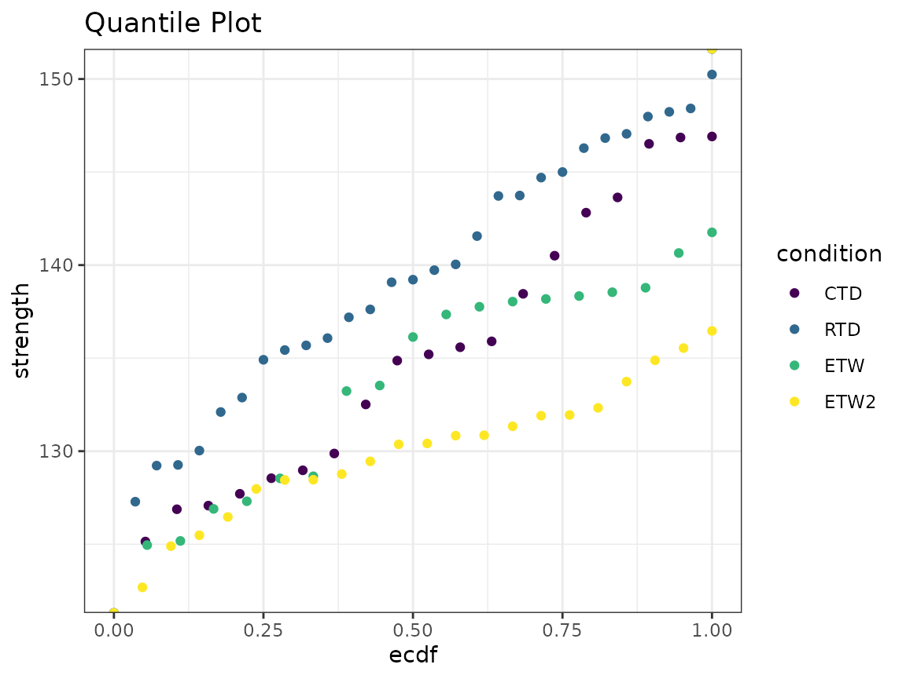
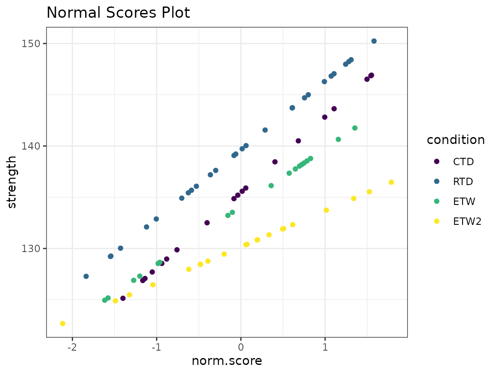
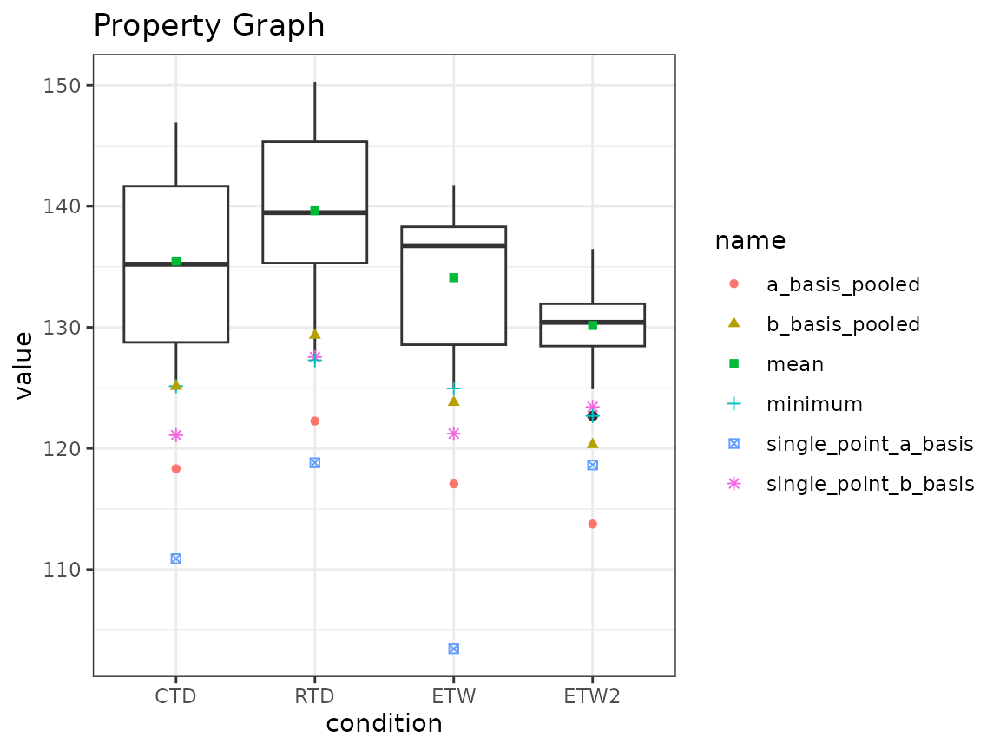

Plotting Composite Material Data
Ally Fraser
2-May-2020
Source:vignettes/cmstatr_Graphing.Rmd
cmstatr_Graphing.RmdThis vignette demonstrates how to create some of the graphs commonly
used when analyzing composite material data. Here, we rely on the ggplot2 package
for graphing. This package can be loaded either on its own, or through
the tidyverse meta-package, which also includes packages
such as dplyr that we will also use.
We’ll need to load a few packages in order to proceed.
Throughout this vignette, we’ll use one of the example data sets that
comes with cmstatr and we’ll focus on the warp-tension data
as an example. We’ll load the example data in a variable as follows. By
default the condition will be in an arbitrary order, but throughout the
visualization, we’ll want the conditions shown in a particular order
(from coldest and driest to hottest and wettest). We can define the
order of the conditions using the ordered function. For
brevity, only the first few rows of the data set are displayed
below.
dat <- carbon.fabric.2 %>%
filter(test == "WT") %>%
mutate(condition = ordered(condition, c("CTD", "RTD", "ETW", "ETW2")))
dat %>%
head(10)
#> test condition batch panel thickness nplies strength modulus failure_mode
#> 1 WT CTD A 1 0.112 14 142.817 9.285 LAT
#> 2 WT CTD A 1 0.113 14 135.901 9.133 LAT
#> 3 WT CTD A 1 0.113 14 132.511 9.253 LAT
#> 4 WT CTD A 2 0.112 14 135.586 9.150 LAB
#> 5 WT CTD A 2 0.113 14 125.145 9.270 LAB
#> 6 WT CTD A 2 0.113 14 135.203 9.189 LGM
#> 7 WT CTD A 2 0.113 14 128.547 9.088 LAB
#> 8 WT CTD B 1 0.113 14 127.709 9.199 LGM
#> 9 WT CTD B 1 0.113 14 127.074 9.058 LGM
#> 10 WT CTD B 1 0.114 14 126.879 9.306 LGMWe’ll then calculate the B-Basis value using the pooling by standard
deviation method. This data set happens to fail some of the diagnostic
tests, but for the purpose of this example, we’ll ignore those failures
using the override argument.
b_basis_pooled <- dat %>%
basis_pooled_cv(strength, condition, batch,
override = c("between_group_variability",
"normalized_variance_equal"))
b_basis_pooled
#>
#> Call:
#> basis_pooled_cv(data = ., x = strength, groups = condition, batch = batch,
#> override = c("between_group_variability", "normalized_variance_equal"))
#>
#> Distribution: Normal - Pooled CV ( n = 86, r = 4 )
#> The following diagnostic tests were overridden:
#> `between_group_variability`,
#> `normalized_variance_equal`
#> B-Basis: ( p = 0.9 , conf = 0.95 )
#> CTD 125.1325
#> RTD 129.3447
#> ETW 123.809
#> ETW2 120.3191The object returned from basis_pooled_cv contains a
number of values. One value is a data.frame containing the
groups (i.e. conditions) and the corresponding basis values. This looks
like the following. We’ll use this in the visualizations.
b_basis_pooled$basis
#> group value
#> CTD CTD 125.1325
#> RTD RTD 129.3447
#> ETW ETW 123.8090
#> ETW2 ETW2 120.3191Batch Plots
Batch plots are used to identify differences between batches. Simple batch plots can be created using box plots and adding horizontal lines for the basis values as follows. Note that the heavy line in the box of the box plot is the median, not the mean. The two hinges correspond with the first and third quantiles and the whiskers extend to the most extreme data point, or 1.5 times the inner quantile range.
In the code below, we use the function rename to rename
the column group to condition. The
data.frame produced by basis_pooled_cv uses
the columns value and group, but to match the
data, we need the column with the conditions to be named
condition.
dat %>%
ggplot(aes(x = batch, y = strength)) +
geom_boxplot() +
geom_jitter(width = 0.25) +
geom_hline(aes(yintercept = value),
data = b_basis_pooled$basis %>% rename(condition = group),
color = "blue") +
facet_grid(. ~ condition) +
theme_bw() +
ggtitle("Batch Plot")
#> Warning: Combining variables of class <ordered> and <factor> was deprecated in ggplot2
#> 3.4.0.
#> ℹ Please ensure your variables are compatible before plotting (location:
#> `join_keys()`)
#> This warning is displayed once every 8 hours.
#> Call `lifecycle::last_lifecycle_warnings()` to see where this warning was
#> generated.Quantile Plots
A quantile plot provides a graphical summary of sample values. This plot displays the sample values and the corresponding quantile. A quantile plot can be used to examine the symmetry and tail sizes of the underlying distribution. Sharp rises may indicate the presence of outliers.
Normal Survival Function Plots
An empirical survival function, and the corresponding normal survival
function can be plotted using two ggplot “stat” functions
provided by cmstatr. In the example below, the empirical
survival function is plotted for each condition, and the survival
function for a normal distribution with the mean and variance from the
data is also plotted (the survival function is 1 minus the cumulative
distribution function). This type of plot can be used to identify how
closely the data follows a normal distribution, and also to compare the
distributions of the various conditions.
dat %>%
ggplot(aes(x = strength, color = condition)) +
stat_normal_surv_func() +
stat_esf() +
theme_bw() +
ggtitle("Normal Survival Function Plot")
Normal Score Plots
The normal scores plot calculates the normal score and plots it against the normal score. Normal plots are useful to investigate distributions of the data.
Q-Q Plots
A Q-Q plot compares the data against the theoretical quantiles for a particular distribution. A line is also plotted showing the normal distribution with mean and variance from the data. If the data exactly followed a normal distribution, all points would fall on this line.
dat %>%
ggplot(aes(sample = strength, colour = condition)) +
geom_qq() +
geom_qq_line() +
ggtitle("Q-Q Plot") +
theme_bw()
Property Plots
Property plots allow for a variety of properties for a group to be compared to other properties within the same group, as well as to other group properties. The properties included in this plot are A-Basis, B-Basis, Pooled A- and B-Basis, Pooled Modified CV (Coefficient of Variation) A- and B-Basis, Mean, and Min for each group.
The property plots will take a bit of work to construct.
First, the distribution of each group must be determined. Once the
distribution has been determined, the proper basis calculation based on
that distribution should be filled in below. We also have a column in
the tables below for extra arguments to pass to the basis
function, such as overrides required or the method for the
basis_hk_ext function to use.
b_basis_fcn <- tribble(
~condition, ~fcn, ~args,
"CTD", "basis_normal", list(override = c("between_batch_variability")),
"RTD", "basis_normal", list(override = c("between_batch_variability")),
"ETW", "basis_hk_ext", NULL,
"ETW2", "basis_normal", list(override = c("between_batch_variability"))
)
a_basis_fcn <- tribble(
~condition, ~fcn, ~args,
"CTD", "basis_normal", list(override = c("between_batch_variability")),
"RTD", "basis_normal", list(override = c("between_batch_variability")),
"ETW", "basis_hk_ext", list(method = "woodward-frawley"),
"ETW2", "basis_normal", list(override = c("between_batch_variability"))
)We’ll write a function that takes the data and information about the distribution and computes the single-point basis value. We’ll use this function for both A- and B-Basis, so we’ll add a parameter for the probability (0.90 or 0.99).
single_point_fcn <- function(group_x, group_batch, cond, basis_fcn, p) {
fcn <- basis_fcn$fcn[basis_fcn$condition == cond[1]]
extra_args <- basis_fcn$args[basis_fcn$condition == cond[1]]
args <- c(
list(x = group_x, batch = group_batch, p = p),
unlist(extra_args))
basis <- do.call(fcn, args)
basis$basis
}
single_point_results <- dat %>%
group_by(condition) %>%
summarise(single_point_b_basis = single_point_fcn(
strength, batch, condition, b_basis_fcn, 0.90),
single_point_a_basis = single_point_fcn(
strength, batch, condition, a_basis_fcn, 0.99),
minimum = min(strength),
mean = mean(strength)) %>%
mutate(condition = ordered(condition, c("CTD", "RTD", "ETW", "ETW2")))
single_point_results
#> # A tibble: 4 × 5
#> condition single_point_b_basis single_point_a_basis minimum mean
#> <ord> <dbl> <dbl> <dbl> <dbl>
#> 1 CTD 121. 111. 125. 135.
#> 2 RTD 128. 119. 127. 140.
#> 3 ETW 121. 103. 125. 134.
#> 4 ETW2 123. 119. 123. 130.In the above code, we also ensure that the condition column is still in the order we expect.
We’ve already computed the B-Basis of the data using a pooling method. We’ll do the same for A-Basis:
a_basis_pooled <- dat %>%
basis_pooled_cv(strength, condition, batch, p = 0.99,
override = c("between_group_variability",
"normalized_variance_equal"))
a_basis_pooled
#>
#> Call:
#> basis_pooled_cv(data = ., x = strength, groups = condition, batch = batch,
#> p = 0.99, override = c("between_group_variability", "normalized_variance_equal"))
#>
#> Distribution: Normal - Pooled CV ( n = 86, r = 4 )
#> The following diagnostic tests were overridden:
#> `between_group_variability`,
#> `normalized_variance_equal`
#> A-Basis: ( p = 0.99 , conf = 0.95 )
#> CTD 118.3205
#> RTD 122.2636
#> ETW 117.074
#> ETW2 113.7601As we saw before, the returned object has a property called
basis, which is a data.frame for the pooling
methods.
a_basis_pooled$basis
#> group value
#> CTD CTD 118.3205
#> RTD RTD 122.2636
#> ETW ETW 117.0740
#> ETW2 ETW2 113.7601We can take this data.frame and change the column names
to suit our needs.
a_basis_pooled$basis %>%
rename(condition = group,
b_basis_pooled = value)
#> condition b_basis_pooled
#> CTD CTD 118.3205
#> RTD RTD 122.2636
#> ETW ETW 117.0740
#> ETW2 ETW2 113.7601We can combine all these steps into one statement. We’ll also ensure that the conditions are listed in the order we want.
a_basis_pooled_results <- a_basis_pooled$basis %>%
rename(condition = group,
a_basis_pooled = value) %>%
mutate(condition = ordered(condition, c("CTD", "RTD", "ETW", "ETW2")))
a_basis_pooled_results
#> condition a_basis_pooled
#> CTD CTD 118.3205
#> RTD RTD 122.2636
#> ETW ETW 117.0740
#> ETW2 ETW2 113.7601And the same thing for B-Basis:
b_basis_pooled_results <- b_basis_pooled$basis %>%
rename(condition = group,
b_basis_pooled = value) %>%
mutate(condition = ordered(condition, c("CTD", "RTD", "ETW", "ETW2")))
b_basis_pooled_results
#> condition b_basis_pooled
#> CTD CTD 125.1325
#> RTD RTD 129.3447
#> ETW ETW 123.8090
#> ETW2 ETW2 120.3191We can use the function inner_join from the
dplyr package to combine the three sets of computational
results. Each row for each condition will be concatenated.
single_point_results %>%
inner_join(b_basis_pooled_results, by = "condition") %>%
inner_join(a_basis_pooled_results, by = "condition")
#> # A tibble: 4 × 7
#> condition single_point_b_basis single_point_a_basis minimum mean
#> <ord> <dbl> <dbl> <dbl> <dbl>
#> 1 CTD 121. 111. 125. 135.
#> 2 RTD 128. 119. 127. 140.
#> 3 ETW 121. 103. 125. 134.
#> 4 ETW2 123. 119. 123. 130.
#> # ℹ 2 more variables: b_basis_pooled <dbl>, a_basis_pooled <dbl>To use this table in the plot we’re trying to construct, we want to “lengthen” the table as follows.
single_point_results %>%
inner_join(b_basis_pooled_results, by = "condition") %>%
inner_join(a_basis_pooled_results, by = "condition") %>%
pivot_longer(cols = single_point_b_basis:a_basis_pooled)
#> # A tibble: 24 × 3
#> condition name value
#> <ord> <chr> <dbl>
#> 1 CTD single_point_b_basis 121.
#> 2 CTD single_point_a_basis 111.
#> 3 CTD minimum 125.
#> 4 CTD mean 135.
#> 5 CTD b_basis_pooled 125.
#> 6 CTD a_basis_pooled 118.
#> 7 RTD single_point_b_basis 128.
#> 8 RTD single_point_a_basis 119.
#> 9 RTD minimum 127.
#> 10 RTD mean 140.
#> # ℹ 14 more rowsWe can now make a plot based on this:
single_point_results %>%
inner_join(b_basis_pooled_results, by = "condition") %>%
inner_join(a_basis_pooled_results, by = "condition") %>%
pivot_longer(cols = single_point_b_basis:a_basis_pooled) %>%
ggplot(aes(x = condition, y = value)) +
geom_boxplot(aes(y = strength), data = dat) +
geom_point(aes(shape = name, color = name)) +
ggtitle("Property Graph") +
theme_bw()
Nested Data Plots
cmstatr contains the function
nested_data_plot. This function creates a plot showing the
sources of variation. In the following example, the data is grouped
according to the variables in the group argument. The data
is first grouped according to batch, then according to
panel. The labels located according to the data points that
fall under them. By default, the mean is used, but that
stat argument can be used to locate the labels according to
median or some other statistic.
carbon.fabric.2 %>%
mutate(panel = as.character(panel)) %>%
filter(test == "WT") %>%
nested_data_plot(strength,
groups = c(batch, panel))
Optionally, fill or color can be set as
follows:
carbon.fabric.2 %>%
mutate(panel = as.character(panel)) %>%
filter(test == "WT" & condition == "RTD") %>%
nested_data_plot(strength,
groups = c(batch, panel),
fill = batch,
color = panel)